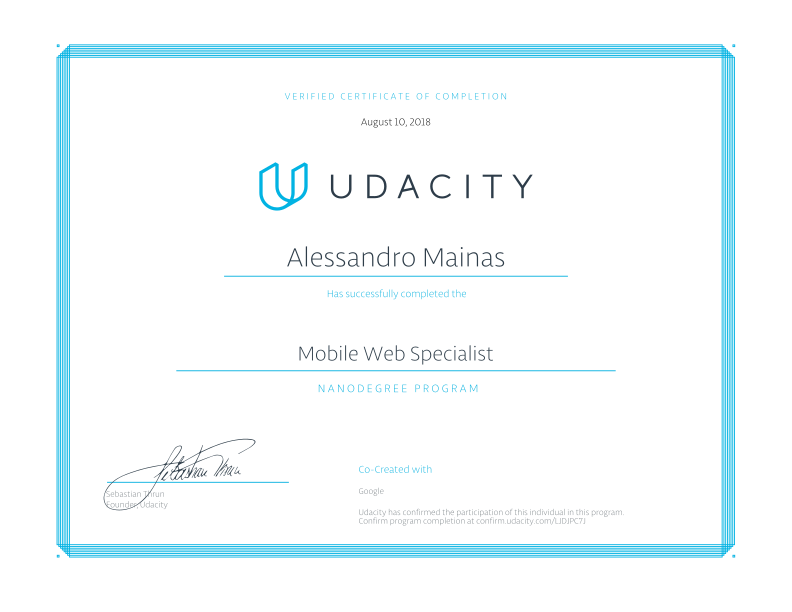

Google Developer Challenge Scholarship: Mobile Web
September 2017: I've been accepted into the Google Developer Challenge Scholarship
The scholarship is made up of two courses: Offline Web Apps and ES6
A deep dive in the whys and hows of Offline First Paradigma, introducing the Service Workers and the Indexed Data Base.
A full course on the brand new feautures intruduced by JavaScript ES6
The Challenge consists in finishing the course before the deadline and helping the others participants using a dedicated forum and a Slack channel
From the 200.000 participants only 6.000 of them will be selected and rewarded with a full Nanodegree course: Google's Mobile Web Specialist Course.
Mobile Web Specialist
February 2018: I have been selected to receive a full 6-month Google Developer Nanodegree Scholarship
Core Curriculum
Accessible & Responsive Web Apps
Abstract: Work with instructors step-by-step to build a responsive web app that functions on any device or screen size. Ensure your web apps meet the highest development by achieving accessibility standards. Blending theory and practice, you'll learn how to build great apps to be mobile-first.
I've just completed the first project meeting every specification!
Here you can find the GitHub repository of the project
Dynamic & Offline Capable Web Apps
Abstract: Make your apps more resilient to limited internet connectivity or bandwidth, and create a total user experience leveraging asynchronous browser features, local storage, and more.
Here you can find the GitHub repository of the project
Performant Web Apps
Abstract: You'll explore the browser's rendering pipeline and uncover patterns that make it easy to build performant apps. Learn how to optimize your web app performance through rendering optimizations, leveraging local storage and more.
Here you can find the GitHub repository of the project
Mobile Web Specialist Nanodegree
August 2018: I sucessfully completed Udacity Mobile Web Specialist Nanodegree!

UP Admission Minisite
February 2019: I worked as a front-end developer for one of the biggest consultancy companies in Lima Peru.
We worked for the UP university in the making of their brand new course admission web page.
We needed a modern solution with a catchy look able to convey a good user experience for the students of the future.
I had the opportunity to work a lot on css animations.
Using the CSS transition property you can create smooth animations with very few lines of code.
Here an example:
Here you can find the website, check it out!
Enseña Peru
Volunteering for the ONG Enseña Peru I built their donation website.
The development pipeline was based in the django Python framework, interacting with the Culqi payment gateway.
Enseña Peru aims for giving to at least 8 out of 10 young children an excellent education by 2032. Donate now!
Code with Purpose Hackathon
February 2018: I participated in the Code with Purpose Hackathon: Students Tackle Global Challenges with SAP Cloud Platform
Organized by SAP Next-Gen, a purpose-driven innovation community that is an outgrowth of the SAP University Alliances program, the hackathon gave students the opportunity to apply their knowledge using advanced technologies like SAP Cloud Platform and SAPUI5, as well as design thinking, to develop applications in a time-critical environment.
We were dispersed in 5 teams each of which had a challenge assigned.
Our challenge was:
SDG #8: Decent Work and Economic Growth
Challenge: How might we make construction sites a more fun place to work especially for young people?
Provided by Landlog, a Japan-based joint venture of Komatsu, SAP, docomo, and optim, that provides an open IoT platform to accelerate the pace of innovation in construction production processes.
We came up with Level Up in Construction, an app that gamifies routine work-related tasks to keep people engaged in their jobs
Here you can find the GitHub repository of the project, and if you want to know more about the Hackathon click here!
OwlkLub
Working for a start up called Owlklub we built an e-commerce website.
The development pipeline was based in the django Python framework, interacting with the PayPal payment gateway.
We developed an e-commerce to sell exclusive t-shirts designed by 9 of the most famous italian tattoo artists.